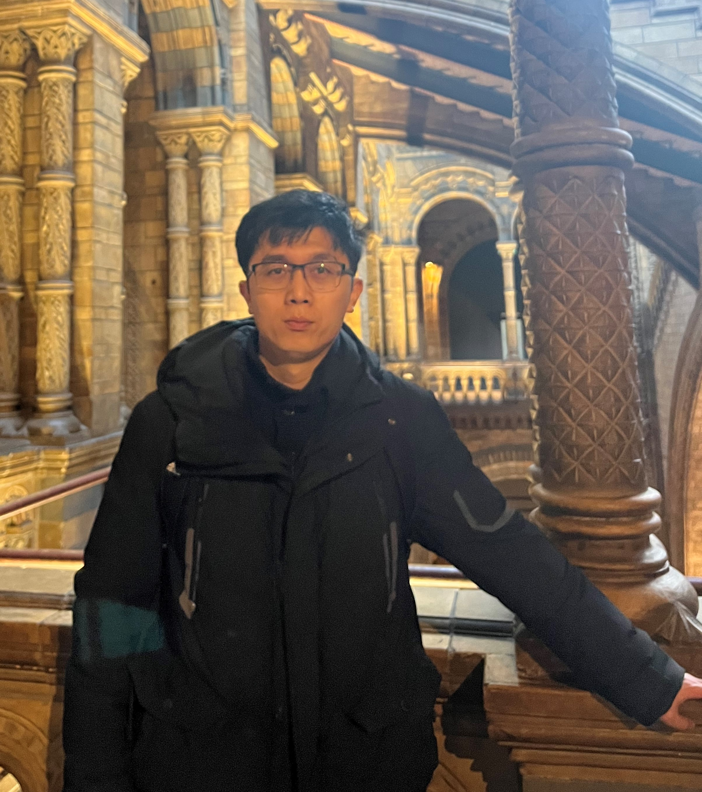

Our team members
-

Dr Zili Li
PI; Lecturer
School of Engineering -

Dr Andrea Visentin
Co PI; Lecturer
School of Computer Science -

Dr Kai Zhao
Postdoctoral researcher
School of Engineering -

Dr Javed Ahmed
Research fellow
School of Engineering
Biography
Kai is a computational mechanics expert with a PhD from Cardiff University. He joined the group for structural health monitoring soon after graduation, where he applied his knowledge to develop machine learning surrogate models to predict the structural performance of bridges.
Currently, Kai is part of the RoadPhone project, where he uses vibration data recorded using smartphones to predict road surface anomalies. His work is at the forefront of developing innovative solutions for improving road safety and transportation infrastructure.
Kai's expertise in computational mechanics and machine learning has been instrumental in advancing the field of structural health monitoring and transportation engineering. He has contributed to several high-profile projects, including ‘Digital Bridge’, ‘Long term performance of composite structures’, ‘defining the design space for Double-Double laminates’, and his research has been published in several peer-reviewed journals.
Research Interest
- Numerical methods for structural analysis
- Design and optimization of composite structures
- Structural health monitoring of road and bridge structures
- Machine Learning Algorithms and Applications in Engineering